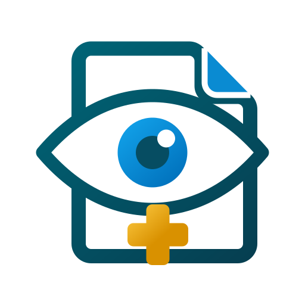

Expediente clínico, receta, presupuesto y consentimiento informado en un clic. Local, privado y sin mensualidades.
🩺 Hecho por un oftalmólogo, para oftalmólogos¿No sabes cuál es tu Mac? Menú → Acerca de esta Mac. Si dice "Chip Apple M…", usa el primer botón.
Los expedientes de tus pacientes viven en tu Mac, no en la nube de un tercero. Respaldos cifrados (AES-256) a tu propio iCloud. Cada visita queda firmada con hash SHA-256 que garantiza su integridad.
Exploración OD/OI precargada como normal, refracción, catálogo CIE-10 oftálmico, ~70 medicamentos oftálmicos, procedimientos (FACO, FemtoLASIK, crosslinking, pterigión…) y receta de lentes para óptica.
Al terminar la consulta se generan automáticamente el expediente (NOM-004-SSA3), la receta, y — si hay cirugía — el presupuesto y el consentimiento informado con las complicaciones del procedimiento.
Licencia por equipo, sin suscripción de marketplace. No rentas el acceso a tu propia información. Funciona sin internet.
Citas con confirmación por WhatsApp, bloqueos de horario, lista de espera y vinculación automática de la cita con la consulta realizada.
Busca al paciente, precarga toda su visita anterior y modifica solo lo que cambió. La consulta subsecuente toma segundos, no minutos.
Requisitos: macOS Monterey (12) o más reciente · Apple Silicon o Intel
Soporte directo con el desarrollador — que también pasa consulta y entiende tu flujo de trabajo.